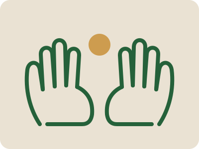

Legal help and psychological care, delivered together
You do not need to know which kind of help you need. Tell us what is happening, and we bring both. Every service below is free of charge.
Legal help
- Human rights protection and litigation
- When your rights have been violated, we can take your case to court and represent you.
- Family law representation
- Marriage, divorce, maintenance, property, and inheritance matters before the courts.
- Divorce mediation and conflict resolution
- Where it is safe and both people are willing, we help you reach an agreement without a long court fight.
- Legal advocacy for survivors of gender-based violence
- Protection orders, criminal complaints, and standing beside you at every stage of the process.
- Child protection and custody advocacy
- Custody, access, guardianship, and protection where a child is at risk.
One team. One plan.
Clients never receive one service without the other. From your first conversation with us, a lawyer and a psychologist are assigned to you as a pair.
- Joint assessment. Both professionals listen to your situation, at the same time when that is easier for you.
- One plan. Legal steps and therapy are planned together, so that a court date never surprises your therapist and a hard week never surprises your lawyer.
- Shared pace. When you need time before a difficult step, the legal work waits. When a legal deadline cannot move, therapy prepares you for it.
- One point of contact. You do not have to repeat your story to different offices.
A legal victory without psychological healing is not justice. Healing without legal protection is not safety.
Psychological care
- Individual trauma-informed therapy
- One-to-one sessions with a psychologist trained to work with the effects of violence, loss, and fear.
- Couples and family therapy
- Support for families going through separation, conflict, or change, including when children are involved.
- Therapy for children
- Age-appropriate care for children affected by family breakdown, violence, or loss.
- Treatment for developmental trauma disorder
- Longer-term care for people whose early lives were shaped by neglect, abuse, or instability.
- Care for ongoing mental health conditions
- Continuing support for people living with chronic mental illness, alongside their legal needs.
How it works, step by step
-
You contact us
By form, phone, or hotline. You can also ask for a home visit. See Get Help.
-
We listen
A first conversation to understand what is happening and what you want. No forms to fill before we talk.
-
You meet your team
A lawyer and a psychologist are assigned to you together. You decide how much to share and how fast to go.
-
We make one plan with you
Legal steps and therapy are planned side by side. We explain every option in plain language.
-
We stay with you
Through court dates, agreements, and recovery. When the legal matter ends, care does not have to.

Four ways to reach our services
- At our office
- Private rooms in Addis Ababa. We give you directions when you book.
- In your home
- For people who cannot travel because of illness, disability, safety, caring duties, or distance within the city.
- Inside prisons
- Our lawyers and psychologists visit incarcerated people and work with them there.
- By hotline, outside Addis Ababa
- For people elsewhere in Ethiopia. Answered during office hours by a trained team member.
We are not an emergency service. Our lines are answered during office hours. If you are in immediate danger, contact the police first. When you are safe, contact us.
Ready to talk?
You do not need to decide what kind of help you need. Just tell us what is happening.
Get Help